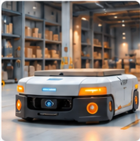

FeaturedAutomation in Material Handling:
Automation in Material Handling:
Key Trends and Opportunities
Explore the latest trends in AGV/AMR, ASRS, and intelligent material handling systems, and how they can create value for Ashley.
Read more →